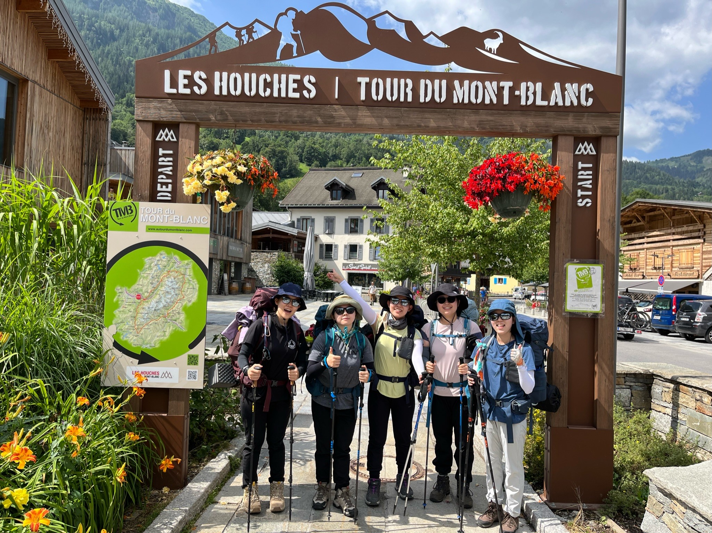
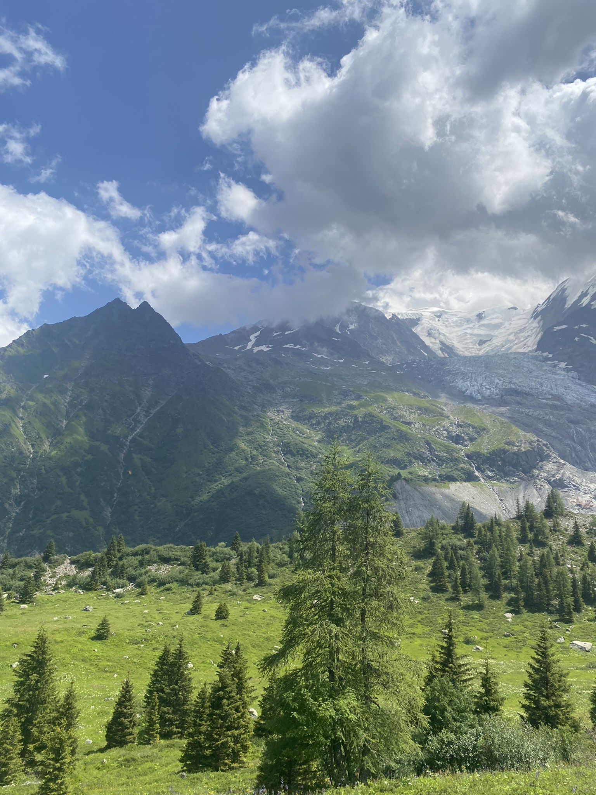

- TMB란?
- 코스 소개
- 일별 코스
TMB 1일차
Chamonix에서 Les Contamines


거리: 16.75km, 상승고도: 1,112m, 하강고도: 902m
루트
- Chamonix에서 Les Houches까지 버스로 이동 - 호텔에서 준 티켓 사용
- Les Houches에서 Bellevue(벨뷔 전망대)까지 케이블카로 이동 - 1인 17.5유로
- 히말라야 브릿지를 지나서 정상인 Col de Tricot으로
- Miage 산장에서 점심 식사
- Truc 산장 지나서 Les Contamines 마을로 하산
숙식
- 점심식사: Miage 산장(오믈렛, 샌드위치 등) - 5인 64유로
- 저녁식사: Les Contamines 마트에서 저녁(파스타 재료, 샐러드 야채, 소세지, 계란 등), 다음날 아침 장 봄 - 5인 49유로
- 숙박: Camping de Pontet(퐁테 캠핑장)에서 캠핑 - 5인 47유로
비용
- 교통
- Chamonix -> Les Housches 버스: 0유로
- Les Housches -> Bellevue 케이블카: 17.5유로
- 식비
- Mliage 산장 점심식사: 12.8유로
- Les Contamines 마트 장(저녁, 아침): 9.76유로
- 숙박
Camping de Pontet(Hot Shower 포함): 9.46유로
- 총 비용: 49.52유로